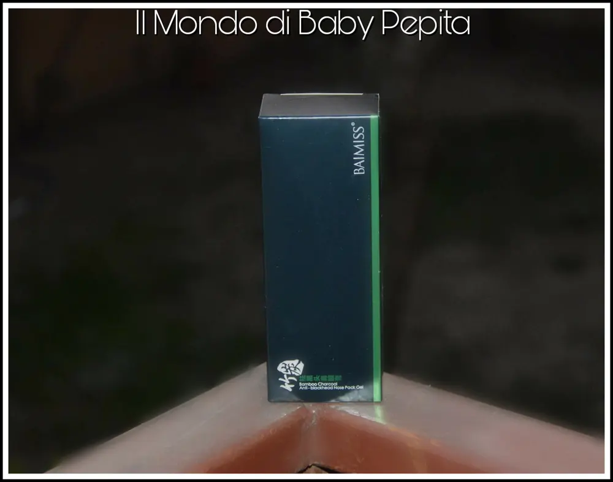
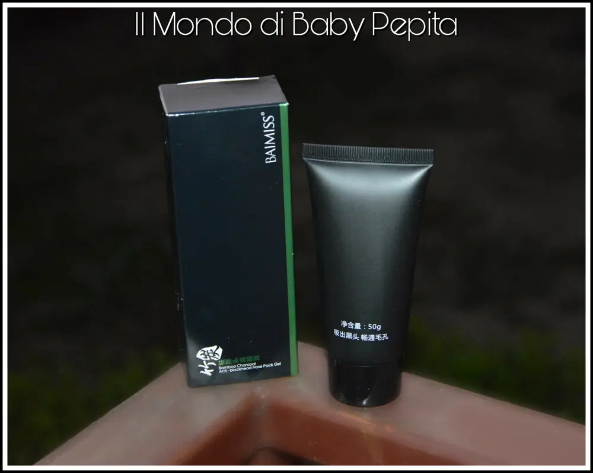
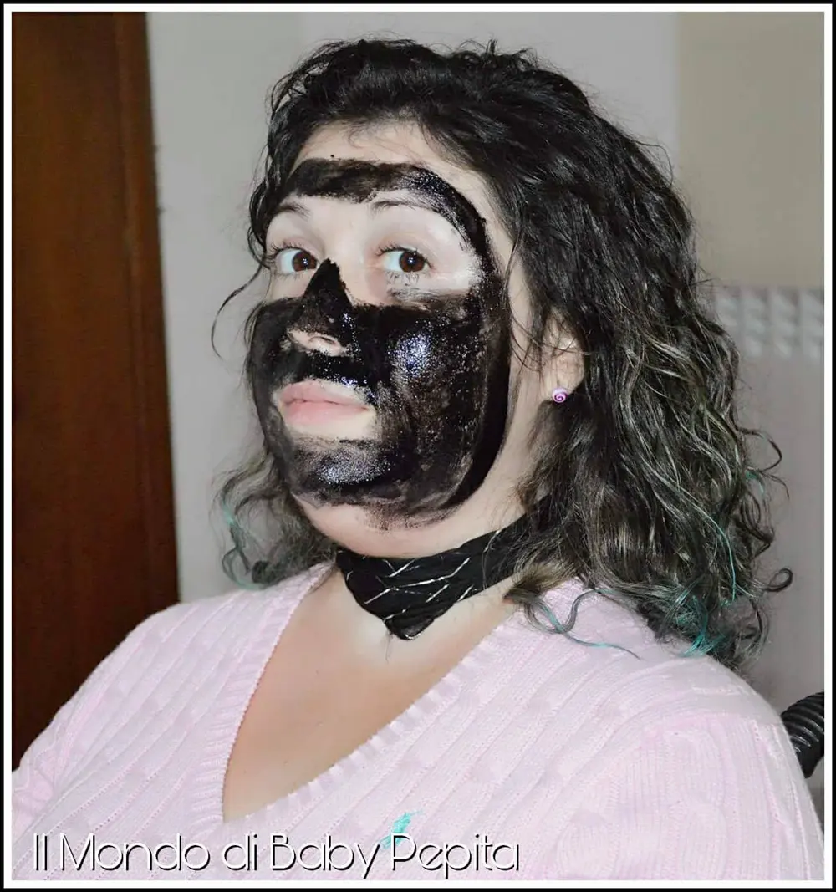

BLACK MASK PER PUNTI NERI E NON SOLO
Quante maschere nere abbiamo visto nell'arco di questi ultimi 2 anni?
Io ne ho provate alcune, tutte ottime.


Ma a cosa serve questa crema nera?
Questa maschera, che vi ho spiegato approfonditamente in quest'altro articolo,
QUI in parole povere serve a pulire il viso da punti neri, a rimuovere le macchie sulla pelle (ovviamente con più trattamenti) e a tenere il viso liscio e morbido.
Non avendo questo gran bisogno di rimuovere punti neri, per mia fortuna, l'ho utilizzata prima di tutto per testarla e poi per pulire un pò il viso da macchie e pellicine.
Perché è nera?
Perché contiene il carbone di bambù Che ha proprietà riconosciute, assorbe il sebo e purifica la pelle eliminando così le cellule morte.

Ce ne sono di tutti i tipi e di tutti i prezzi, ognuna ovviamente viene acquistata più per la fiducia del marchio anziché gli ingredienti.
Questa che vi mostro costa poco ma credo sia comunque efficace.

Ingredienti:
acqua, alcool polivinilico, acrilico copolimero di estere, etanolo, glicole propilenico, bambù Carbone, AIOE BARBADENSIS foglie polvere, PEG-40 olio di ricino idrogenato, fenossietanolo, fragranza, esteri idrossibenzilici.
Come usare:
1. Lavare accuratamente il viso.
2. Con un pennellino, distribuire il prodotto in modo uniforme evitando il contorno occhi e labbra; si consiglia di effettuare la pulizia dopo avere raso il viso da eventuale peluria e barba in quanto la maschera, attaccandosi, potrebbe arrecare dolore durante lo strappo.
3. Attendere 20-30 minuti che la maschera si secchi, strapparla delicatamente dal basso verso l'alto poi detergere con acqua calda.
Prezzo: 7,99€
Io ho subito avvertito la pelle morbida e liscia e questa sensazione è durata per ben 3 giorni.
L'unica nota negativa è che nel tirare la maschera che poi diventa pellicola, fa un bel pò male, ma credo sia tutto dovuto al fatto che agisce a rimuovere cellule morte.
Ho fatto anche un video di applicazione e rimozione per mostrarvi come si applica e come diventa pellicola poi...

Per acquistare questa Black mask CLICCA QUI.
Per quanto riguarda me seguitemi:
YOUTUBE